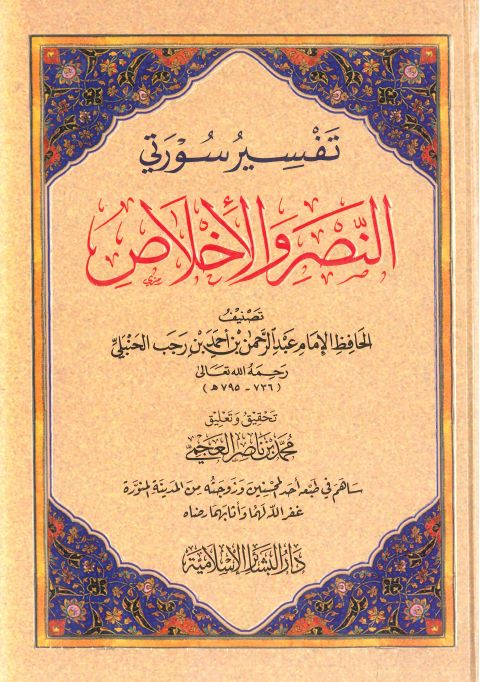

Downloads need an internet connection.
تفسير سورتي النصر والإخلاص- ط أخرى
Authors: ابن رجب الحنبلي
Editors: محمد بن ناصر العجمي
Publishers: دار البشائر الإسلامية
**▫️ العنوان: تفسير سورتي النصر والإخلاص- ط أخرى** ▪️ المؤلف: #عبد_الرحمن_بن_أحمد_بن_رجب_الحنبلي ▫️ المحقق: #محمد_بن_ناصر_العجمي ▪️ الناشر: #دار_البشائر_الإسلامية ▫️ تاريخ النشر: 1440هـ 2019م ▪️ بلد النشر: بيروت، #لبنان ▫️ الطبعة: 1 ▪️ عدد الأجزاء: 1 ▫️ الصفحات: 129 ▪️ نوع الوعاء: #كتاب ▫️ التصنيف الرئيسي: #التفسير_وعلوم_القرآن ۪